2026
10月的姬路：打架祭典、賞月會與當令農產
10月的姬路有哪些活動？ 除了姬路經典景點國寶姬路城、與千年古剎圓教寺書寫山之外，還有震撼的灘之喧嘩祭、中秋觀月會、全國陶器市集等季節限定活動。 除了逛逛，還吃爆瀨戶內海當季漁獲、大豐收的葡萄、路邊摘採的柿子等當季農產。

日本打工度假的一年：出發前的準備、支出花費，和不打工的生活方式
2025到2026年，我在日本打工度假一年，文章整理了行前準備、實際支出、日文能力、行李打包和保險的心得，還有我大部分的時間其實不是打工，是以工換宿。 寫給準備出發但還有些猶豫、不知該從哪裡準備起，以及對非典型的生活形式感興趣的人。

養雞小記｜幸好我不是經濟動物
隨著日子一天一天地過、體型差距拉大時，跟不上大家，意味著水與飼料等資源取得可能遭排擠而加大成長差距。
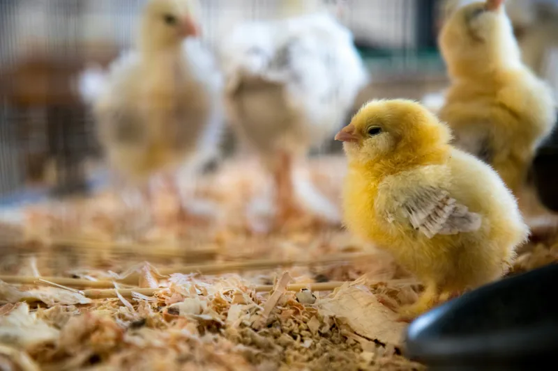
雪場旅館打工：長野菅平高原的雪國生活
打工度假唯一的心願是「在有雪的地方度過冬天」，於是 2025 年 12 月到 2026 年 3 月，我在菅平高原的旅館打工：早餐、客房清掃與晚餐的輪班，零下十度的日常，以及一起度過三個半月的兩位台灣人夥伴。
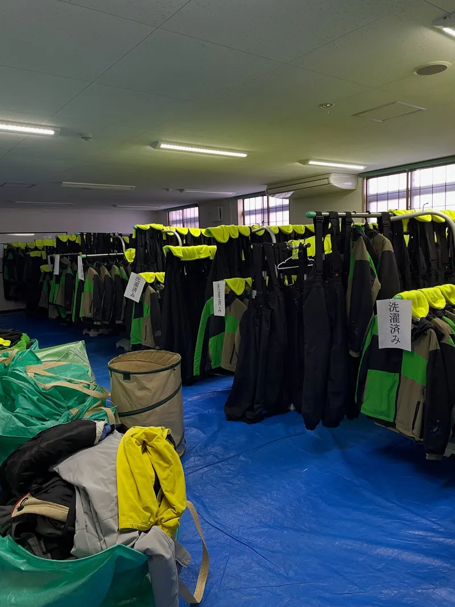
2025
打工換宿的支線事件：和日本人一起做菜，給日本人吃
「まちまち案内所」的店員、本職做豆腐的紫保さん，邀請我協助準備每月一次的午餐食堂，做滷肉飯、麻油雞湯與豆花給日本人吃。
京丹後的一日旅遊：久美濱、網野、峰山
久美濱的豪商宅邸與如意寺、網野的拿坡里披薩與會唱歌的琴引濱、海邊足湯，以及峰山的社區咖啡館與日本唯一的狛「猫」。
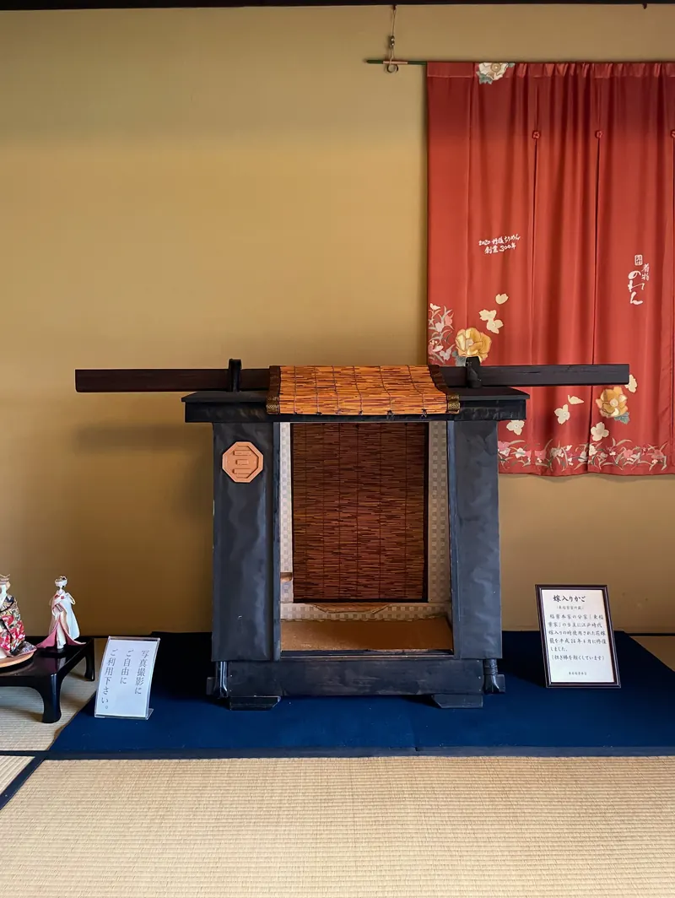
京丹後的地產蔬果，以及解禁的松葉蟹！
騎腳踏車找無人農產直販所，地瓜、水梨、新鮮花生和巨大香菇，還去了兩次牧場 Sora 吃冰，還有不能錯過的松葉蟹！
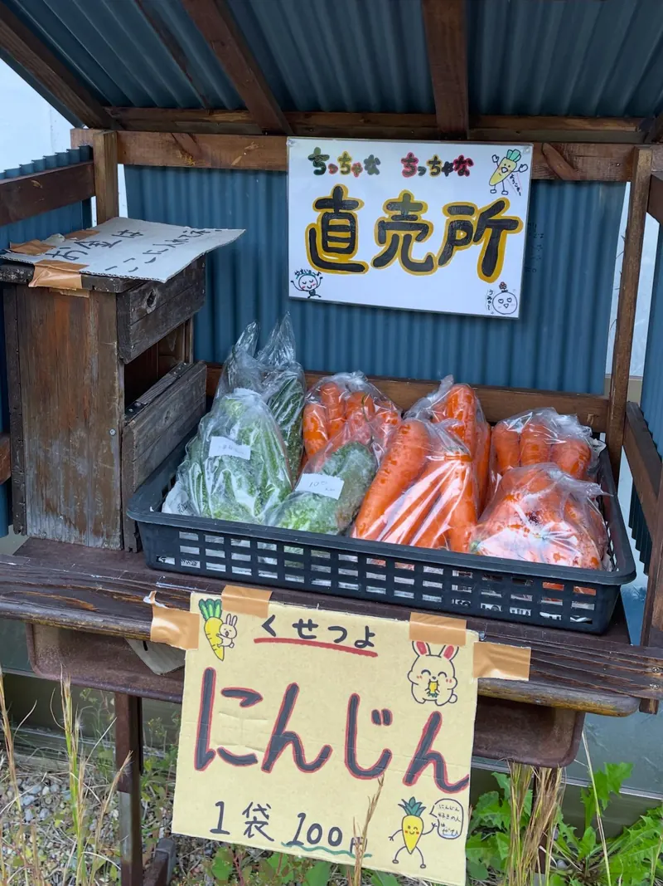
打工換宿：京丹後久美濱灣的牡蠣漁村
第三次換宿在京都最北端、臨日本海的久美濱灣蚵農家，住了三週，接觸陌生的海上工作。
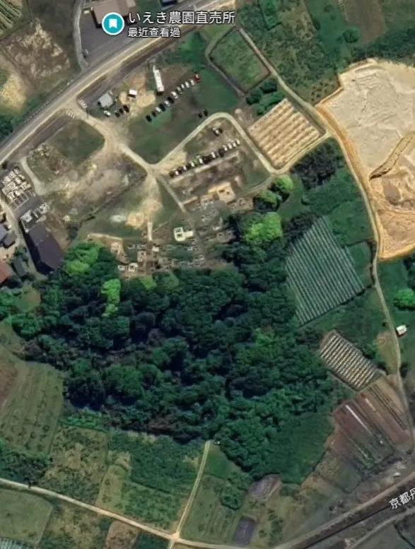
打工換宿：姬路近郊的草莓園，十月沒有草莓
第二次換宿在姬路的草莓觀光農場一個月，早起、Me time的溫室工作，還有相當照顧我的 Host 與農場主人一家。
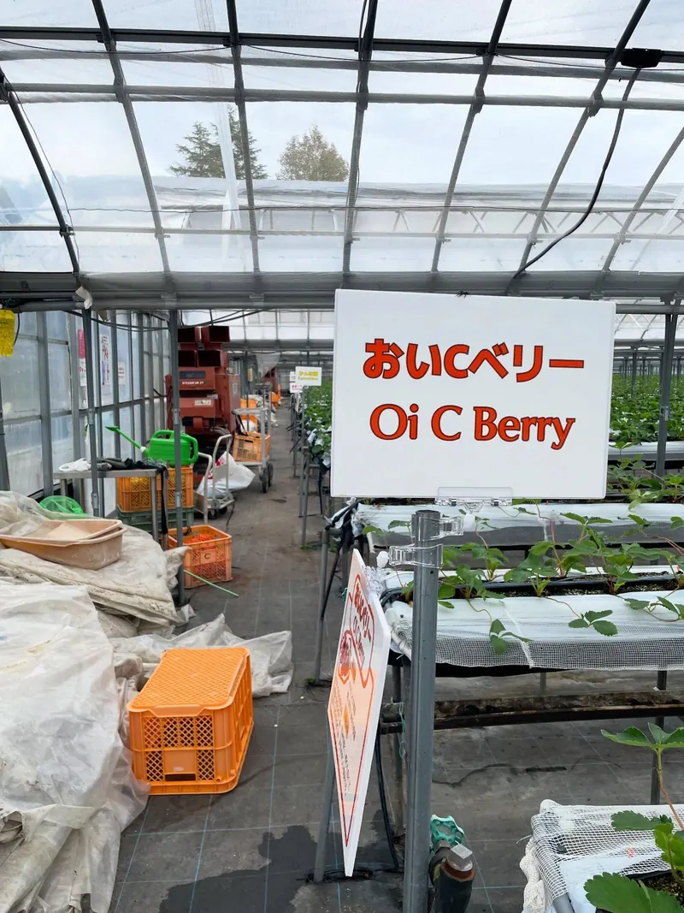
沒有藝術季的瀨戶內海小豆島
前往下一個換宿地點姬路之前，順路去了小豆島：從姬路港搭三小時渡輪、住溫馨的民宿、逛醬油工廠與酒造，才發現自己來的時候根本不是藝術季。
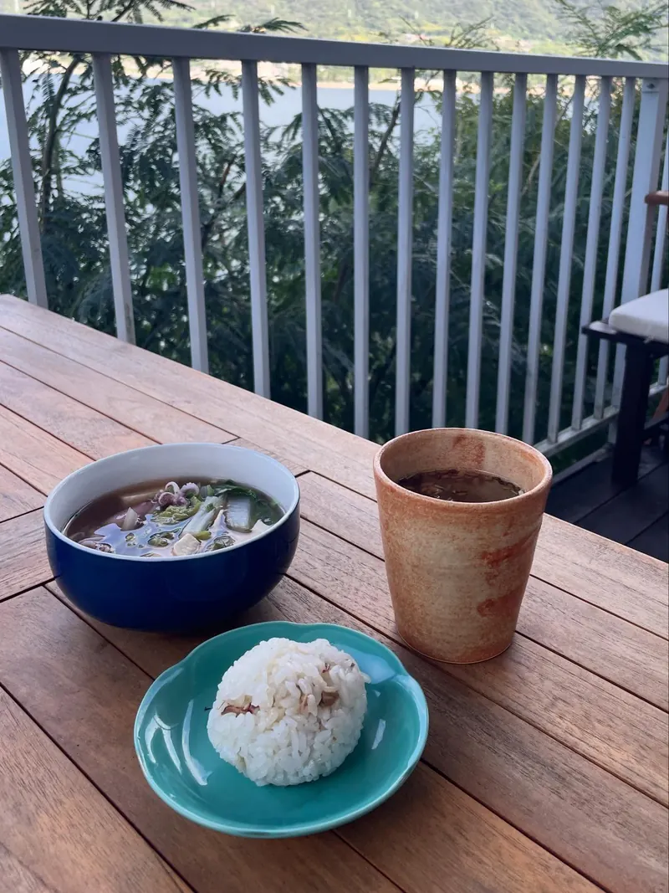
再回加賀：三大溫泉區、大聖寺與福井遊記
九月底回到六七月待過的加賀，趁機把山中、山代、片山津三個溫泉區與大聖寺一帶的景點記下來，再補上福井的恐龍博物館與永平寺。
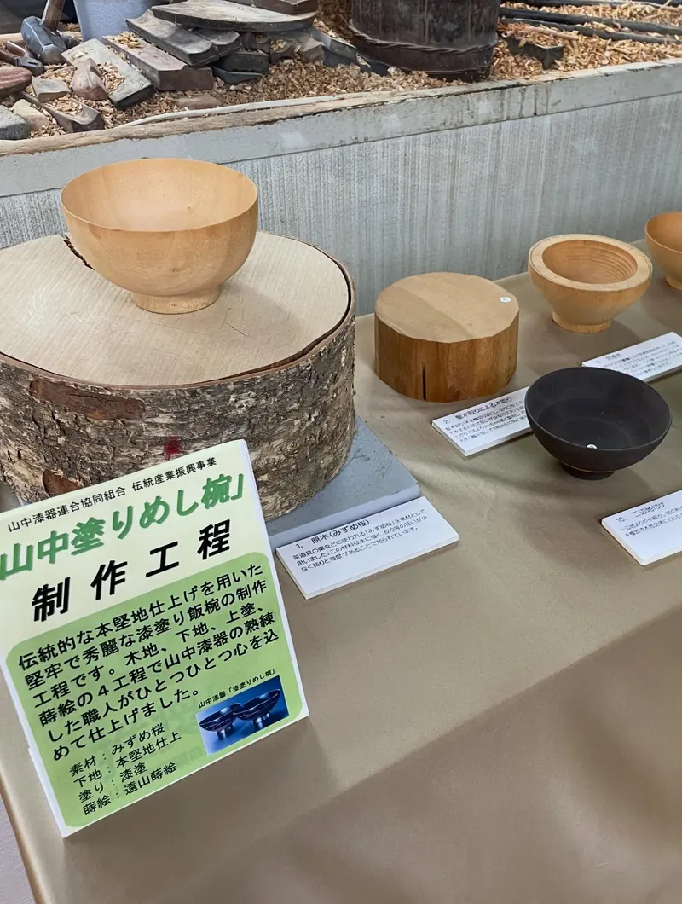
福井南越前町短居：蓮花鎮的生活、居民，與眼鏡
結束家庭旅行後，在福井縣南越前町的玉村屋和 Share house 住了兩週：今庄宿的老街、蓮花、街道浪漫祭典，以及鯖江的眼鏡節。
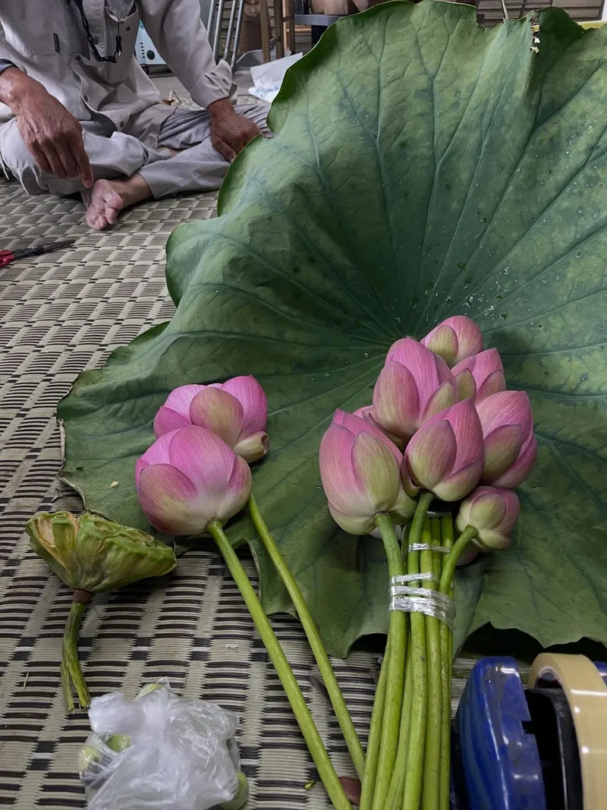
家庭旅行：岐阜 again！鵜飼、高山老街、蠟燭之夜與白川鄉
一週的家庭旅行又回到岐阜，去了岐阜城、看鵜飼表演，也在飛驒古川偶遇蠟燭之夜、再訪藥草料理，並補上白川鄉合掌村。
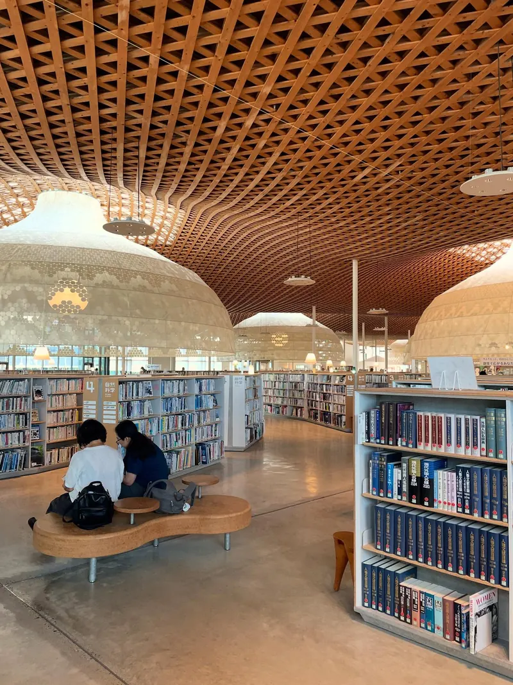
打工換宿：琵琶湖東側的民宿，只說英文的八月
第一次換宿是在琵琶湖邊的渡假民宿一個月，平凡的防務與打掃工作，與來自各國的夥伴一起生活反而是重點。
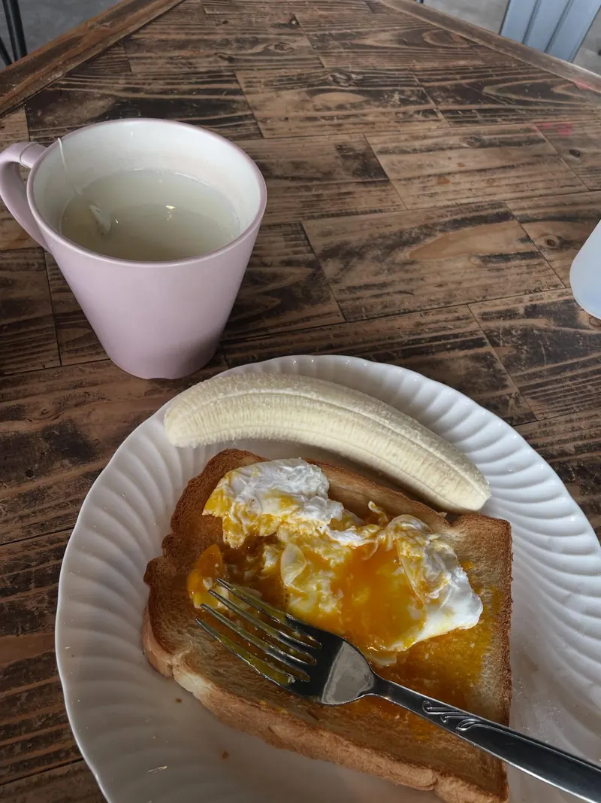
往東走到岐阜：犬山城、多治見與大垣
七月底一週旅行的東邊三天：第二座國寶城犬山城與城下町、美濃燒產地多治見的平凡午後，以及只留下湧水與水饅頭印象的大垣。
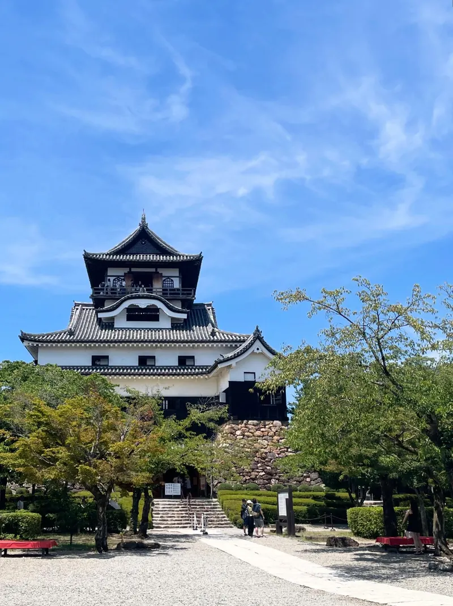
琵琶湖東側：長濱、彥根與近江八幡
七月底在兩個換宿地之間排了一週旅行，去了琵琶湖東側，長濱、彥根、近江八幡。
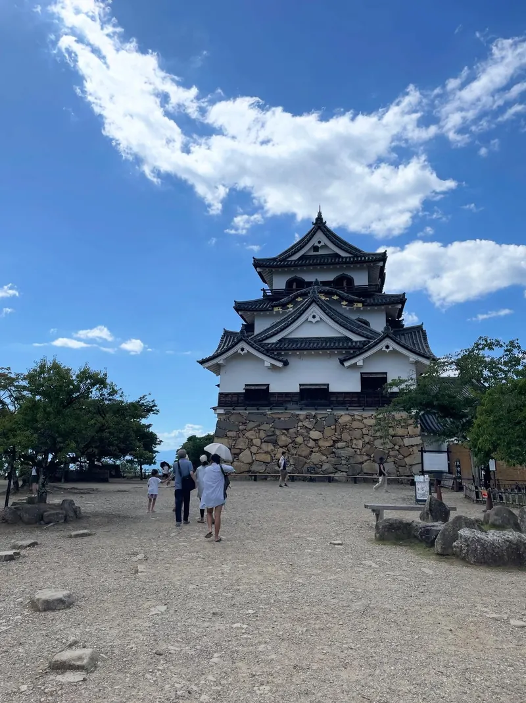
「現出你的原形！」兩人旅遊才有的魔法時刻
「伴侶一定要一起過夜旅遊」，尤其最好是兩人都不懂當地語言，同樣的「無能」、沒有由誰照顧誰（而是互相照顧），是一個會讓人原形畢露的情境。
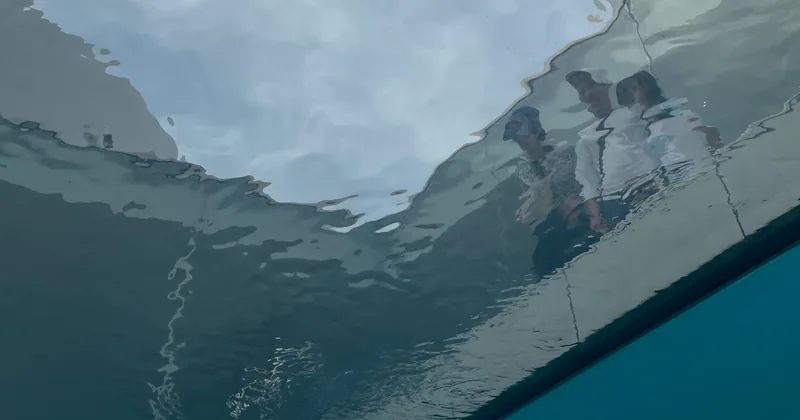
南無警察大菩薩：臺北北警察署歷史特展
在台灣新文化運動紀念館看的警察署歷史特展：主視覺、內容規劃、AR 與參觀人潮的觀察，以及整體心得。
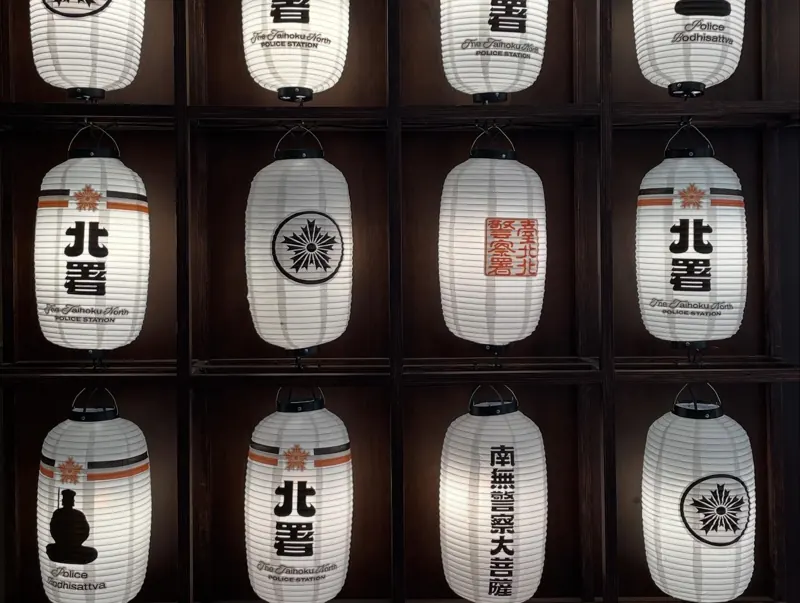
2024


2023
不依賴任何人和事，追星也是，戀愛也是
一個人原本就能夠獲得快樂，知道自己的需要、懂得和自己相處，也懂得照顧好自己。
搬家，是整理家當也是整理自己
「我該把我的透明水彩與色鉛筆送出嗎？」潛台詞是：「我是否該和某一個時期的自己說再見了？那個曾經喜歡畫畫的自己。」將他們割捨，彷彿是切斷未來與畫畫的所有連結一樣，真的是非常難以決定。
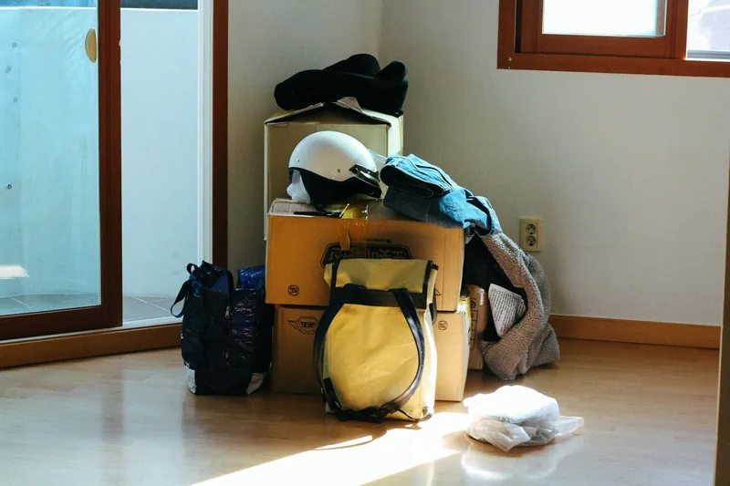
致20歲迷惘的我：追求夢想的生活型態
〈追求夢想的生活型態〉是大四那年寫的，累積上千字的文稿始終沒有迎來完稿。當年是為了寫下對夢想的迷惘與猜想，如今嘗試用過去幾年的實踐與收穫，給予這些猜想一個回答，與那些文稿––那個當年徬徨的自己對話。

作為大人，不是只有一個樣子
一部分的我的大腦，認同一種「大人模板」，這也是為什麼我還是會忍不住責怪自己不像個大人。但有另一部分、叛逆的我並不認同。
2023 Q1 自由工作生存報告，休息和啟程
寫完覺得過於流水帳絮絮叨叨，慎讀！消失的2022 Q4跑去找工作，最後還是以自由工作的形式，再次「暫時地」定了下來。
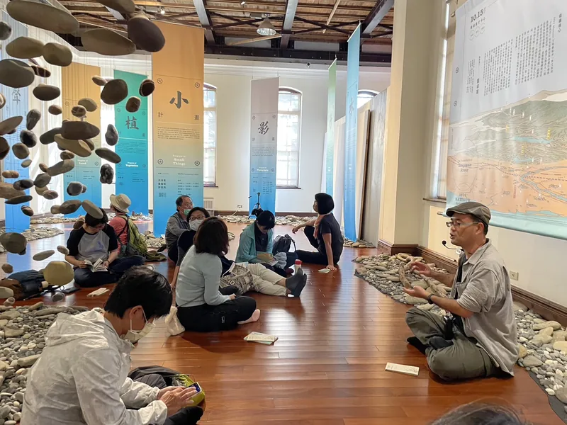
我想要活得有意義，但不想餓死啊！
選擇一份與社會共好的工作，有多難？筆記在永續職涯講座當中所分享的「自我覺察的方法」，並記錄自己目前為止的狀態。
終於願意露出額頭
從小討厭妹妹頭、羨慕別人的「黑長直」，習慣躲在瀏海後面，從來沒想過把額頭露出來的一天。
《自由書寫術》閱讀摘要
隨興地寫，就算腦袋卡住，只剩下破碎、沒有意義的字詞，還是不能停止！摘要給已經讀過的自己（或他人），未來需要可以快速回頭找靈感。

一個有餘裕的地方
回老家蹭飯的我不趕時間，司機大哥或許不「守規矩」，但細想這些也不過是3分鐘的事情。
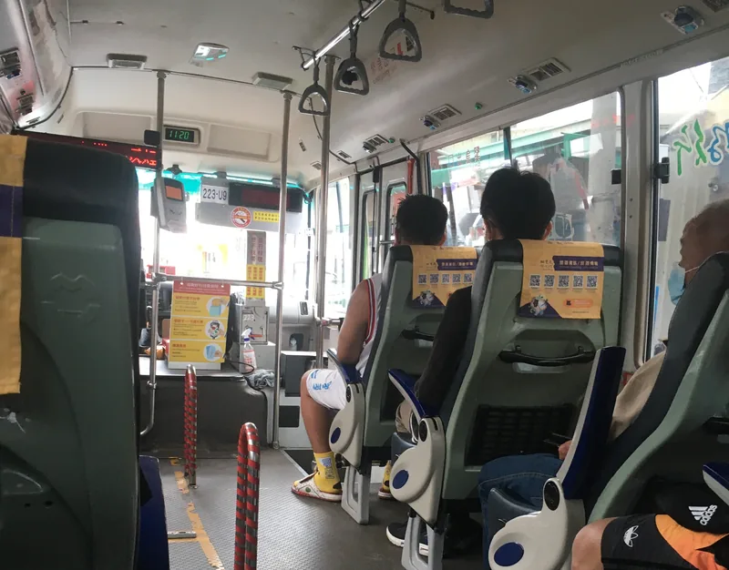
2022
日常記事｜攀岩，作為一種自我對話的形式
五年多的日子裡，在攀爬的過程中領悟了一點什麼，關於活著、關於選擇、關於我自己怎麼想我自己。
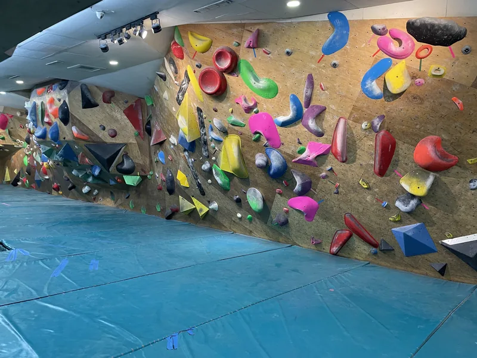
2022 Q3 自由工作生存報告，暫時的自由工作
本來只是一段離職之後的小休息，卻成了暫時的自由工作者。這段時間彷彿是「人品驗收時間」，自由之所以能持續，要感謝的莫過於是給我工作的親友們。雖然還是打算要找正職工作，但又明白自由工作的型態是適合自己的，因此記錄這段短暫經驗，供未來的自己參考。
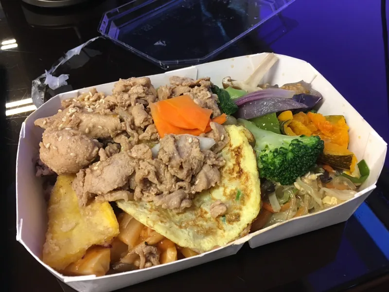
春天，南荷蘭附近的17種常見鳥類
記錄一介普通人的我，三月中到五月期間在南荷蘭一帶所見鳥類。
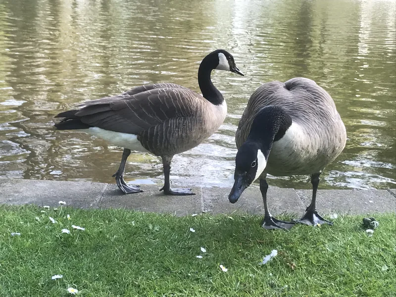
日常記事｜紅蘿蔔葉再利用料理
你如果和我一樣看見了帶著新鮮綠葉的紅蘿蔔，一定也會想「這麼漂亮的葉子除了漂亮地躺進廚餘桶，還有沒有其他可能？」，因而嘗試了幾種蘿蔔葉料理。
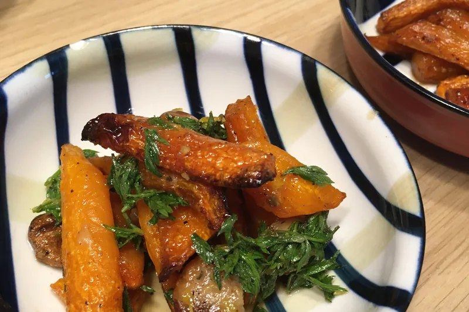
日常記事｜你要有所準備，大麻才會幫你。大概吧？
初次嘗試了大麻，卻發現沒有想像中的致幻效果而感到失望，或許問題是出於我「沒有目的」？
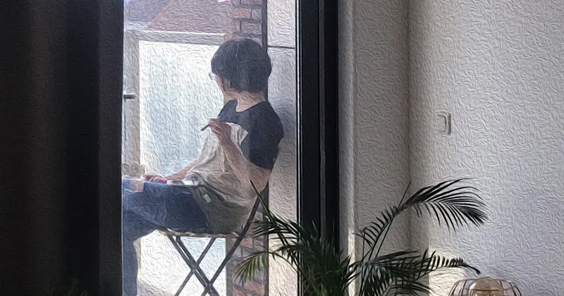
2021
2020
日常記事｜關於創作，比技巧更重要的是……
我在乎的已不只是畫風獨特、構圖穩定、精緻度高而已。世俗一點說，作品的獨創性、故事性、呈現手法等面向，是這個階段的我願意掏錢買的東西。
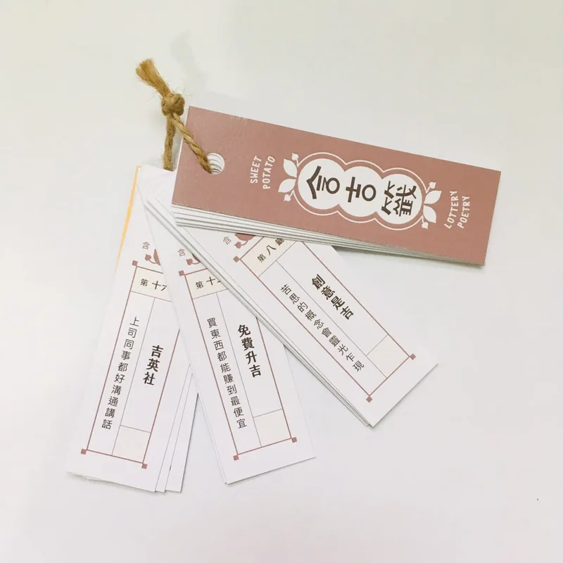
閱讀途中｜關於《圈外編輯》, 《未完成，黃華成》, 留十八分鐘給一首詩
很多事都可以是創作，關鍵在於過程中是有沒有把自己的意識放在裡頭。「……每一個民族被稱為詩的，都是聲音的開始，而不是視覺的開始。」

活動記事｜希望再見––溪流悠遠自由的模樣
透著窺箱的壓克力面，窺看貼地匍匐的蝦虎、石縫裡的蝦蟹，或是在不起風的時刻，以肉眼穿過清澈的溪水看見魚群。

公共空間活動怎麼「辦」 讀《街頭設計》
用日本七個案例，讓實踐者告訴你「戶外公共空間應用」的可能與Know-How。捨棄了個人式的讀後心得，本文更像是書籍簡介，並整理了案例的網站連結。
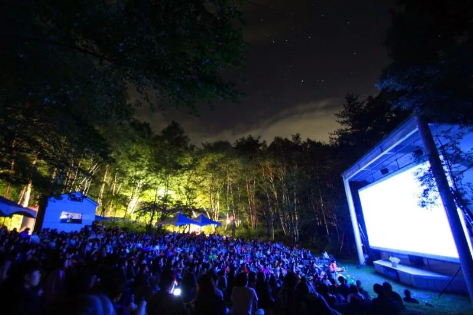
因為不理解而無法靠近 讀《滌，這個不正常的人》#2
關係無法更靠近、無法互相理解的問題，如房間裡的被刻意忽視的大象，而我也像刺蝟一樣，隨時準備反擊，因為露出脆弱的一處、表達真實的感受，從來只帶來受傷，而我過於害怕再次受傷。
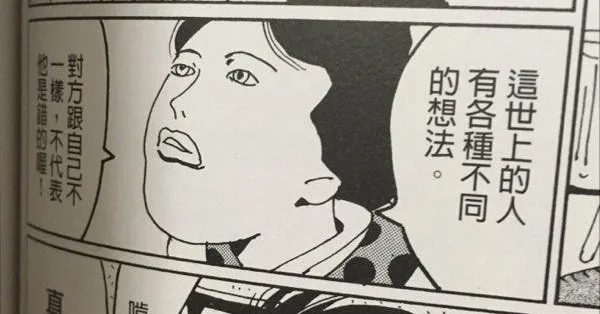
我也是個不正常的人啊 讀《滌，這個不正常的人》#1
那個令人無法忍受的「砰」，我也蒐集了很多很多。其實遭遇事件是沒有關係的，但「那有什麼好在意的？」、「那是你的問題。」、「又沒關係。」才是每一個「砰」的來源，如無法與搬床鋪的人錯身一般，從那些他人看來的小事，收穫了很多否定和忽視。而我一直都…
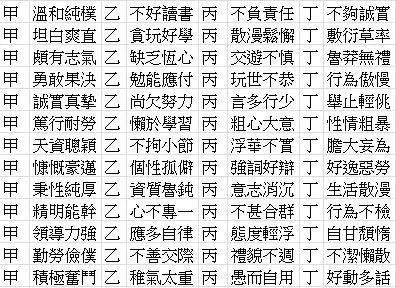
[日常] 請不要別開眼睛
只是需要被好好看著、好好對待
2019


2018
[創作] 社會化的獸
把外衣脫下，再穿上。

[遊記] 夏季宜蘭二日遊(松羅、鴛鴦溪)
「要聽在地人的話。」 - 旅遊箴言

[日常] 2018年田間記事 - 割稻
第二年，以為今年要錯過割稻的機會了，結果還去了兩次。
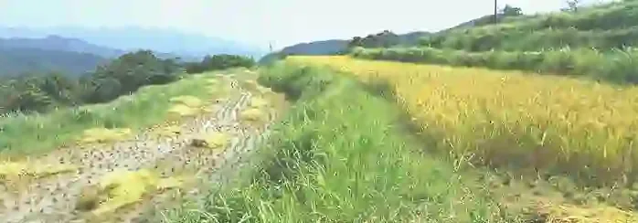
[食記] 溪北產物@嘉義縣溪北村
沒有住址、只營業一小時的麵包工作室。
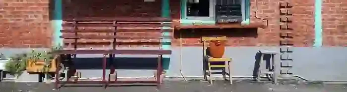
[食記] 阿嬤A灶腳@捷運大坪林站
介於平價與精緻間，找到自己的道。
[日常] 氣味的記憶
此生不會忘記的，氣味的印記。
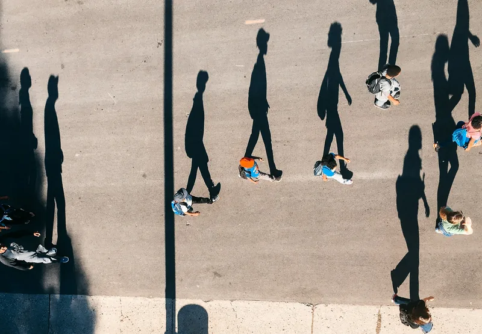
[創作] 我也曾是那豐美水草
你是游牧詩人，哪兒有草就往哪兒去。

[詩] 我有時候會忘記想你
陽光刺進眼睛發出哀號 在市場裡加加減減算不出正確金額 FB的訊息傳錯了人 因為貓的搗蛋幹聲連連 苦惱工作的回信該怎麼寫 閱讀推理小說最後揭開真相的章節 清除跟髒衣服一起在洗衣機翻滾的衛生紙 午後雷陣雨來臨前將衣服收進來
[創作] 無題
你們在一張床上背對背，就像連續幾日忽略了不經意的分開才終於回過神來。 他翻過身，灼熱的氣息燃燒著你的耳後，撐起的身體形成一個巨大而無法閃躲的影子壟罩你。 彼此的距離近得你難以拒絕，仍啞著聲和他說，「…對不起，現在沒辦法
2017
找不到符合的文章，換個關鍵字或清除篩選試試。